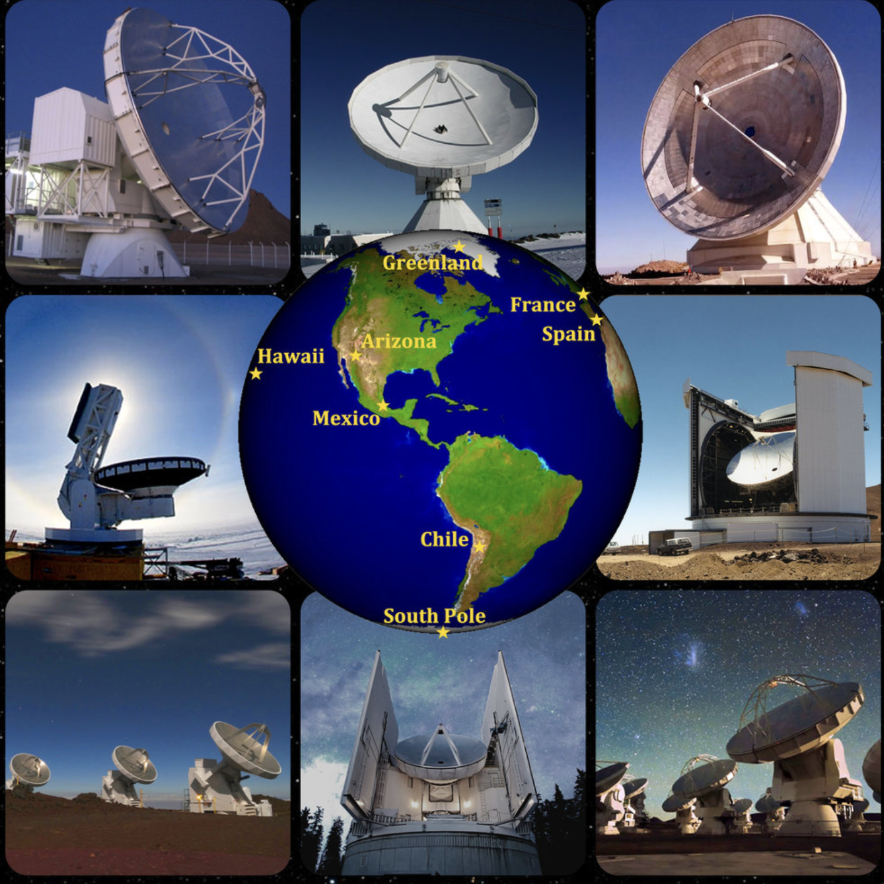
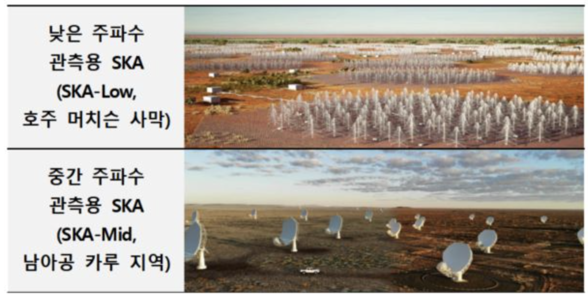
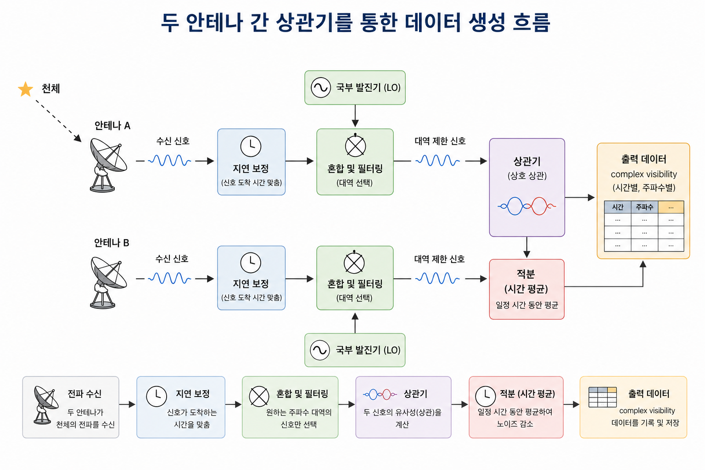
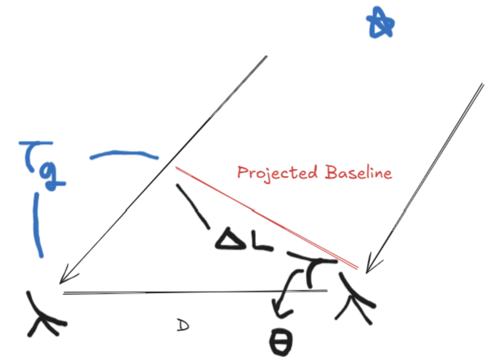
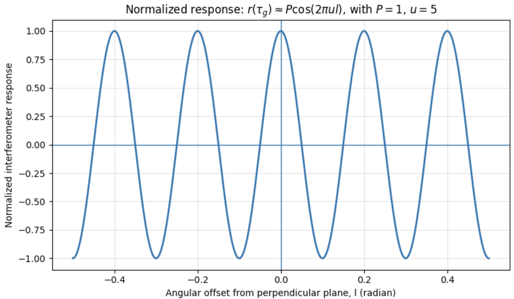
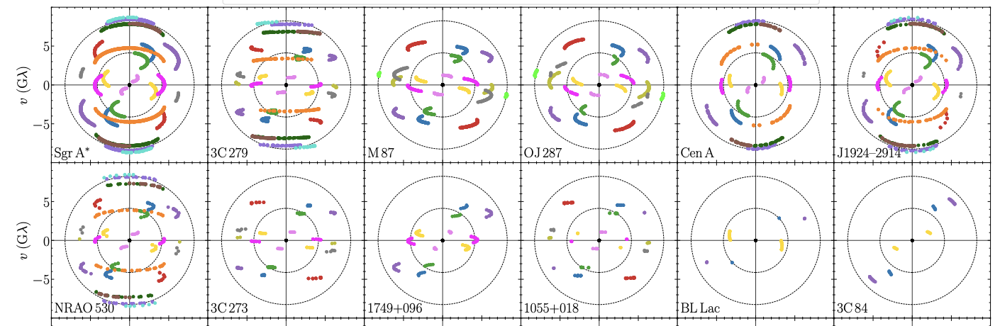

1. Basic Interferometer
- 한 망원경의 구경을 크게하는 데는 한계가 있어 여러 대의 전파 망원경을 이용하여 전파를 서로 간섭시켜 하나의 전파 망원경으로 작동하는 시스템을 전파 간섭계(Radio Interferometer) 라고 한다.
- 작은 전파 망원경들이 마치 큰 망원경처럼 기능하여 높은 분해능을 얻을 수 있다.
- 간섭계를 이루는 망원경들은 서로 완전히 떨어져 있다. (예: VLBI, VLA, EHT, KVN, EAVN)

- 배열(Array): 여러 대의 망원경이 지하의 케이블로 연결되어 있는 경우를 의미한다. 다른 표현으로 connected array라고 한다. (예: VLA, ALMA, LOFAR, SKA)
- Subarray: 관측 시간에 따른 각각의 배열을 부르는 말이다. 예를 들어, A 시간대에는 VLA만 이용하고 B 시간대에는 VLA, ALMA를 같이 이용한다.

- 기선(Baseline): 간섭계에서 두 안테나 사이의 거리를 의미한다.
- 예를 들어, baseline이 10km인 2개의 전파 망원경을 고려하자. 두 망원경이 받는 신호가 동조화된다면, 각각은 마치 지름 10km의 단일 접시 안테나처럼 작동할 수 있으나, 단지 하늘을 가로지르는 좁은 영역에 국한된다.
- 이는 커다란 접시의 반대편 양 끝에 2개의 작은 조각처럼 작용하기 때문이다.
- 즉, 두 망원경을 동조화하면, 해상도 마치 10km짜리 초거대 접시를 쓴 것처럼 매우 좋아지지만, 실제로는 접시 전체가 아니라 “양 끝 두 점”만 쓰는 것이기 때문에, 하늘에서 아주 좁은 방향 범위의 신호만 강하게 감지할 수 있다.
1.1. Multipyling Interferometer
- 간섭계에서는 전파 신호를 받아들이면 해당 신호를 원자 시계로 조정하여 모은 후, 데이터로 가공한다.
- 간섭계에서는 두 안테나가 받은 전기 신호를 단순히 서로 더하는 것이 아니라, 서로 곱한 뒤 시간 평균을 낸다. 이러한 계산 방식을 상관(correlation) 이라고 한다.
- 데이터가 만들어지는 과정을 대략적으로 나타내면 다음 그림처럼 나타낼 수 있다.

1.2. One-Dimensional Source
- 간섭계의 본질은 하나의 단순 간섭계를 이루는 두 안테나에 도달하는 파면의 위상을 고려하는 것이다.
- 한 전파원이 머리 바로 있으면 파동은 같은 위상으로 두 전파 망원경에 도달할 것이다.
- 이 경우, 신호들이 상관기에서 전기적으로 결합될 때, 이들은 합쳐져 보강되어 강한 신호를 검출할 것이다.
- Phase reference position은 간섭계에서 신호의 위상이 0으로 맞춰지는 임의의 기준 방향을 의미한다. 즉, 어떤 기준이 되는 방향을 말한다.
- 다음 그림과 같은 상황을 고려해보자.

- Projected baseline: 실제 두 안테나 사이의 baseline \(D\) 를 전파 신호가 도달하는 방향에 수직인 평면에 투영한 길이를 의미한다.
- 기하학적 지연 \(\tau_g\) 는 “경로 길이 차이 / 전파 속도” 이므로 다음과 같이 나타낼 수 있다:
\[ \tau_g = \frac{D}{c}\sin \theta \tag{1.1} \]
1.2.1. Fringe
- 전파 간섭계에서 수신한 데이터를 상관기에서 상관처리하여 얻어낸 패턴을 프린지(Fringe) 라고 한다. 이는 상관 결과가 시간, 주파수, 또는 delay/rate 공간에서 보이는 간섭무늬의 진동 패턴이다.
- 상관(correlation) 과정에서 천체가 가진 적색이동(redshift) 등의 정보는 모두 동일하기 때문에, 상관 시, 고려해야할 요인은 기하학적 지연(geometric delay)만 남게된다.
- 그림 4에서 상관(correlation) 후의 출력값을 유도해보자.
- 그림 4에서 왼쪽의 안테나로 오는 신호가 기하학적 지연을 겪는다고 가정하자. 이때, 각 안테나에서 수신되는 전압은 다음과 같다:
\[ V_1 = v_1 \cos(2\pi \nu(t -\tau_g)) \tag{1.2} \]
\[ V_2 = v_2 \cos(2\pi \nu t) \tag{1.3} \]
- \(v_1\), \(v_2\): 관측된 전압의 진폭
- \(\nu\): 관측 주파수
- \(t\): 관측 시간
- 식 (1.2), (1.3)을 서로 곱하고 평균하면 다음과 같다:
\[ r(\tau_g) = <V_1 V_2> = \frac{1}{2}v_1 v_2 \cos(2\pi \nu \tau_g) \tag{1.4} \]
- 식 (1.4)를 얻기 위해 삼각함수의 곱을 합으로 바꾸는 공식을 이용했으며, 충분히 긴 시간 동안 평균했다고 가정했다.
- 두 전파 망원경이 동일하다면 다음과 같이 식 (1.4)를 고쳐쓸 수 있다:
\[ r(\tau_g) = <V_1 V_2> = \frac{1}{2}V^2 \cos (2\pi \nu \tau_g) \approx P \cos (\omega \tau_g) \tag{1.5} \]
\(\omega = 2\pi \nu\): 각진동수
식 (1.5)에서 상관기 출력은 \(\tau_g\) 에 따라 사인형(sinusoidal) 으로 진동한다. 왜냐하면 \(\tau_g\) 가 baseline 길이 \(D\) 와 천체 방향 \(\theta\) 에 의존하기 때문이다.
- \(\theta\) 는 관측 시간동안 지구가 자전함에 따라 천체의 고도가 달라지면서 같이 변화한다.
여기서 사인형의 출력 \((\cos(2\pi \nu \tau_g\) ))을 간섭계의 프린지(Fringe) 라고 한다.
- 식 (1.5)에서 \(l = \cos(\pi /2 - \theta) = \sin \theta\) 라고 하고 \(u = D / \lambda\) 라고 두면 상관기의 출력은 다음과 같다:
\[ r(\tau_g) \approx P \cos(2\pi ul) \tag{1.6} \]
- 식 (1.6)은 \(u\) 와 \(l\) 의 변화에 따라 진동한다. 이를 그림으로 나타내면 다음과 같다:

- 위 그림에서 마루는 \(2\pi u l = 2\pi n\) (단, \(n\) 은 정수)을 만족해야 하므로 \(l = n /u\) 이다. 이웃한 두 마루 사이의 간격은 다음과 같다:
\[ \Delta l = l_{n+1} - l_n = \frac{n+1}{u} - \frac{n}{u} = \frac{1}{u} \sim \frac{\lambda}{D} \tag{1.7} \]
- 즉, 식 (1.7)에 따르면 그림 5의 두 마루 사이의 간격은 간섭계의 분해능을 의미한다!
- 그림 5에서 \(u = 5\)이므로 만약에 관측 파장이 10cm라고 하면, 이 간섭계의 baseline \(D\) 는 50cm 임을 알 수 있다.
- 간섭계의 분해능을 알고 관측 파장이 주어지면 두 전파 망원경의 baseline의 길이를 계산할 수 있다.
- \(u\) 가 더 커지면(분해능이 좋아지면) 프린지(fringe) 간격이 더 촘촘해지고 baseline 길이가 더 길다는 것을 알 수 있다.
- 프린지(fringe)는 물결 모양을 가지고 있어 마루와 골이 있다. 그래서 양수와 음수 영역을 모두 가지는데, 만약, 양수 영역에 대한 정보만 얻고 싶다면 위상 변화를 주어 보강 간섭을 일으키면 된다.
- 종종 논문에서 Fringe spacing이라는 표현이 나오는데, 이는 \(\Delta l\) 을 원의 형태로 나타낸 것을 의미한다. 예를 들어서 \(25{\rm \mu as}\), \(50{\rm \mu as}\)인 Fringe spacing은 간섭계의 각분해능을 아래 이미지와 같이 원의 형태로 나타낸 것이다. (아래 사진 참고)

1.2.2. Instrumental delay
- 기기 지연(Instrumental delay)은 phase reference position으로부터 오는 복사의 기하학적 지연과 같아지도록 지속적으로 조정된다.
- phase reference position의 방향을 \(\theta_0\) 라고 하면, phase reference position에서 오는 기하학적 지연을 상쇄하기 위한 보상 지연 \(\tau_i\) 는 다음과 같다:
\[ \tau_i=\frac{D}{c}\sin\theta_0 \tag{1.8} \]
- 식 (1.8)은 식 (1.1)과 형태가 같은데, 이는 임의의 \(\theta\) 에 대한 순 지연(net delay)는 “기하학적 지연 - 기기 지연”으로 주어기기 때문이다:
\[ \tau = \frac{D}{c}\sin \theta - \tau_i \tag{1.9} \]
- 만약 \(\theta = \theta_0\) 이면, \(\tau = 0\) 이 되면서 phase reference position에서 오는 신호는 두 안테나 사이의 위상차가 제거되어 프린지 위상이 기준값으로 고정되는 것을 알 수 있다.
- 작은 각도 \(\Delta \theta\) 만큼 벗어난 방향에서 들어오는 기하학적 지연은 다음과 같이 나타낼 수 있다:
\[ \tau_g (\theta_0 -\Delta \theta) = \frac{D}{c}\sin (\theta_0 - \Delta \theta) \tag{1.10} \]
- 기기는 phase reference position에 맞춰진 지연 \(\tau_i\) 만 보상한다. 식 (1.10) 및 지구 자전까지 고려한 순 지연은 다음과 같다:
\[ \tau \simeq \frac{D}{c} \Delta \theta \cos \theta_0 \tag{1.11} \]
- 지구 자전에 의해 \(\theta_0\) 에 관한 기하학적 관계가 변하기 때문에 실제 관측에서는 \(\tau_i\) 가 시간에 따라 계속 조정된다.
- 기하학적 지연은 저주파의 경우, 전리층(ionsphere)의 변동, 고주파의 경우, 수증기의 진동으로 인해 발생할 수 있다.
1.3. Projected Baseline and Fringe Response
- 하늘의 어느 위치에 있는 광원을 관측하더라도, 프린지의 각분해능은 광원 방향에 수직한 평면에 투영한 projected baseline 길이에 의해 결정된다.
- phase reference position \(\theta_0\) 에 대해서 projected baseline을 파장 단위로 정규화한 양을 도입할 수 있는데, 이는 다음과 같이 나타난다:
\[ u =\frac{D\cos\theta_0}{\lambda} = \frac{\nu_0 D\cos\theta_0}{c} \tag{1.12} \]
- 즉, \(u\) 는 두 안테나 사이의 projected baseline을 파장 단위로 정규화해서 나타낸 무차원 단위의 길이를 의미한다.
- 이후에 보겠지만, 양의 \(u\) 값은 공간 주파수(spatial frequency) 로 해석된다.
- 작은 각도 \(\Delta\theta\) 에 대해 방향 \((\theta_0-\Delta\theta)\) 에서 오는 프린지 응답은 다음과 같이 계산된다:
\[ \cos(2\pi\nu_0\tau)=\cos\{2\pi\nu_0 [\frac{D}{c}\sin(\theta_0-\Delta\theta)-\tau_i]\} \]
\[ \simeq \cos\left[2\pi\nu_0(D/c)\sin\Delta\theta\cos\theta_0 \right] \tag{1.13} \]
- 식 (1.13)을 이용해서 프린지 응답을 나타내면 다음과 같다:
\[ F(l) = \cos(2\pi\nu_0\tau) = \cos(2\pi u l), \tag{1.14} \]
- 단, \(l=\sin\Delta\theta\) 이다.
- 식 (1.14)는 \(\theta=\theta_0-\Delta\theta\) 에 위치한 점광원에 대한 응답을 의미한다.
1.4. Basic Interferometer Discussion
- 간섭계의 분해능은 baseline 길이에만 의존하지 않는다. 시간 및 위도에 따라 변하는 물리량이 많기 때문이다. 따라서 다양한 요인에 의해서 간섭계 분해능은 달라진다.